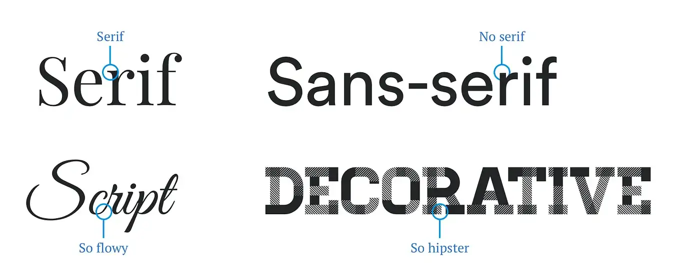
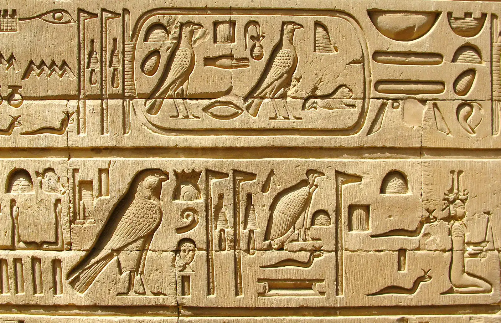
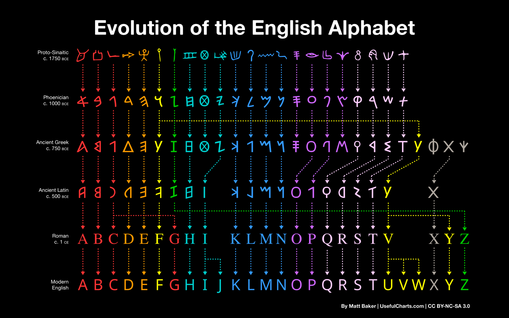
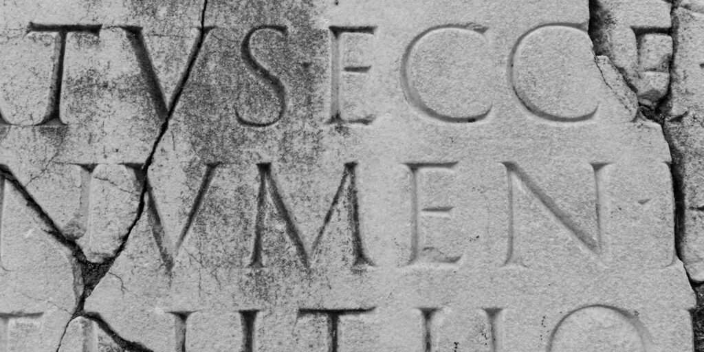
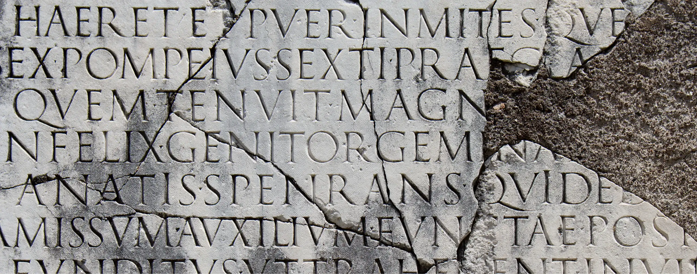
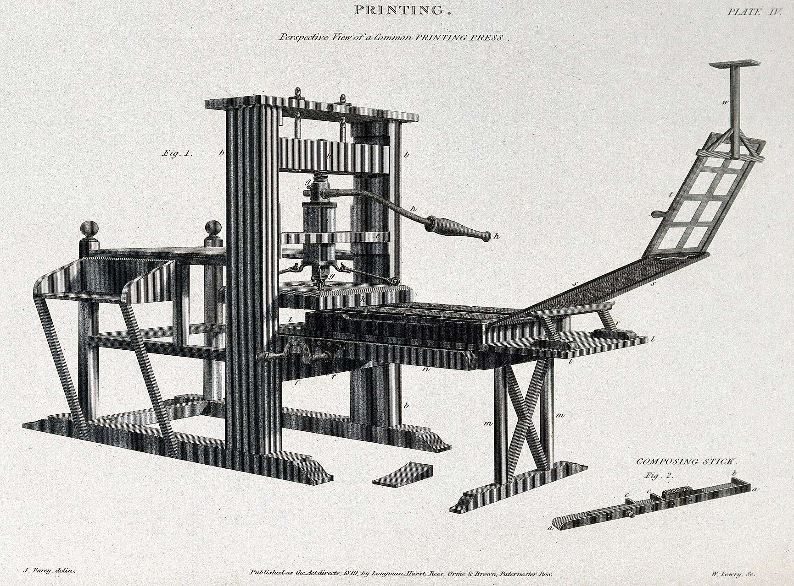
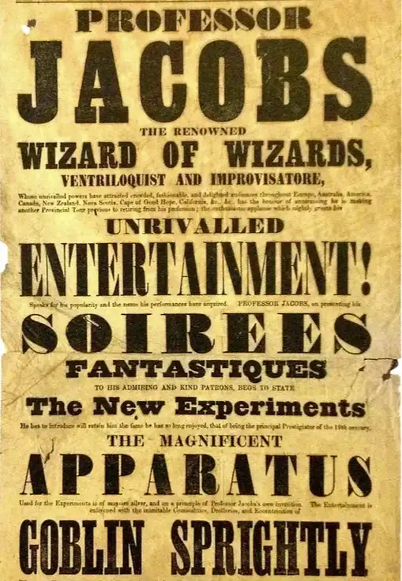
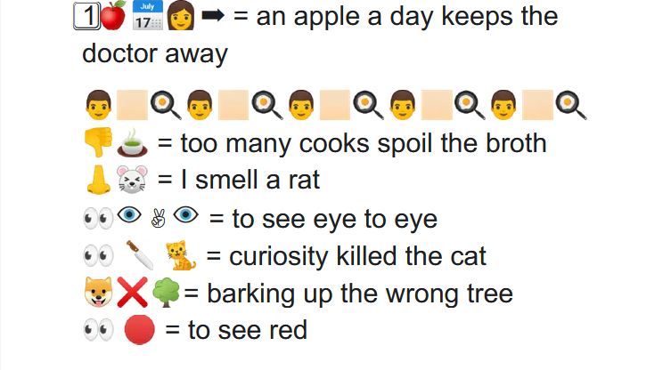

Typography
Table of Contents
Chose a type that is readable and have an aesthetic that convey your message
1. Type clasifications

- Serif are letters that have a finishing stroke like that of letters that were carved on stones with chisels.
- Sans-serif are letters that don't have a finishing stroke like that of Serif letters.
- Script are letters that look like they are handwritten.
- Decorative are letter that have an aesthetic to them.
2. Terms
- Typeface is the core design that is shared between letters, numbers, and characters.
- Font of a typeface with a specific size and weight.
- Typeface Family is a bundle of fonts with different sizes and weights
- Leading is the vertical distance between two lines
- Kerning is the distance between two letters, numbers, and characters.
- Tracking is the distance between all letters, numbers, and characters.
3. History
The first writing evidence of tytpography that we have are the hieroglyphs by the ancient egyptians where pictures convey messages

Some of the hieroglyphs were piced up by the Phinicians traders, and they developed it so that a shape convei a sound istead of a concept.

Romens uses flat chisels to carve letters onto stones, that is why at the and of each letter stroke the is a perpondiculat line that we are now called "Serif".


Gunternburd later continue the innovation on type by inventing the printing press that automating the printing process thus leading to book becoming affordable for the masses.

The next innovation happend in the industrial revolution, where aesthetics were intreduced to attract peoples attention to sell them stuff aka advertising.

At this age, some of us are using hieroglyphs, but with a fancy name, we call them "Emojis"
